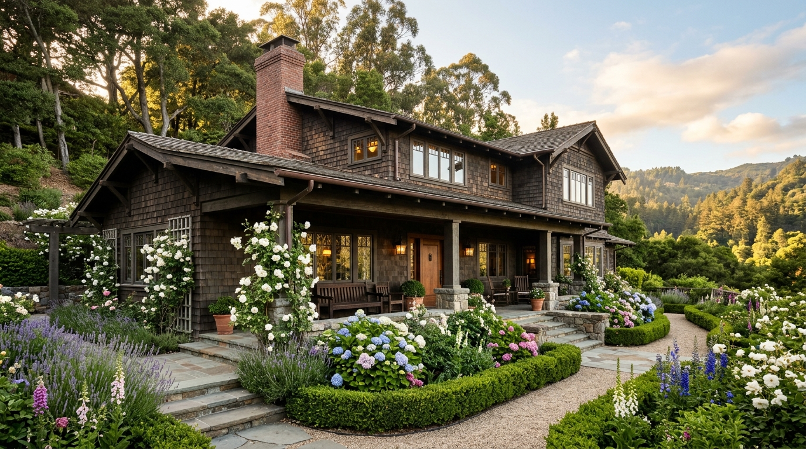
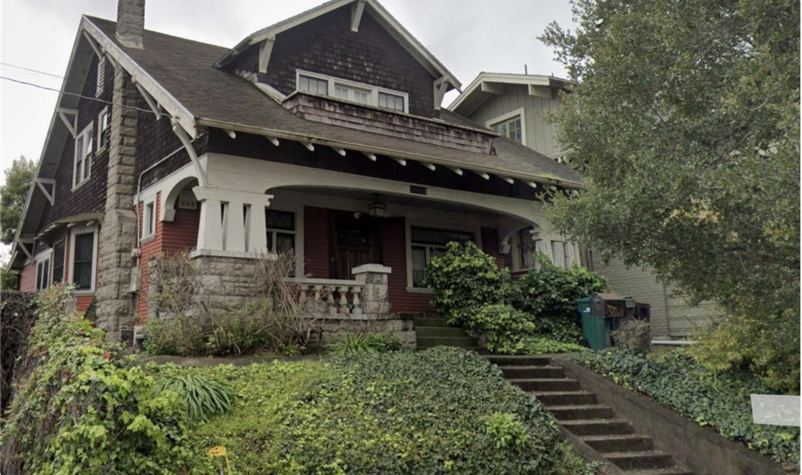

EXPLORE THE NEIGHBORHOODS


Find your corner of Oakland

WALKABLE · BOUTIQUES & DINING
Rockridge →
Tree-lined streets, historic Craftsman bungalows, Brown Shingle homes, and the celebrated College Avenue corridor with rapid BART access.
FOREST LIVING · BAY VIEWS
Montclair & Piedmont Pines →
Secluded hill enclaves surrounded by native pines and redwoods, offering mid-century architectural marvels and panoramic bridge views.

CHARM · COMMUNITY PARKS
Glenview & Greenwood →
Welcoming neighborhood with gourmet dining on Park Boulevard, picturesque California bungalows, and friendly tree-shaded lanes.
URBAN VIBRANCY · THEATER
Uptown & Grand Lake →
Historic theaters, Lake Merritt joggers, Saturday farmers markets, loft living, and a buzzing culinary renaissance.